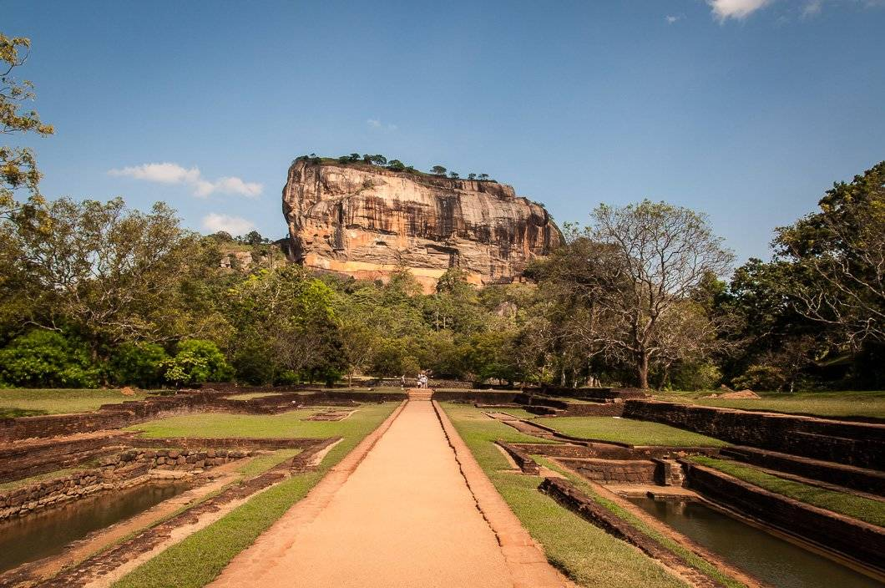
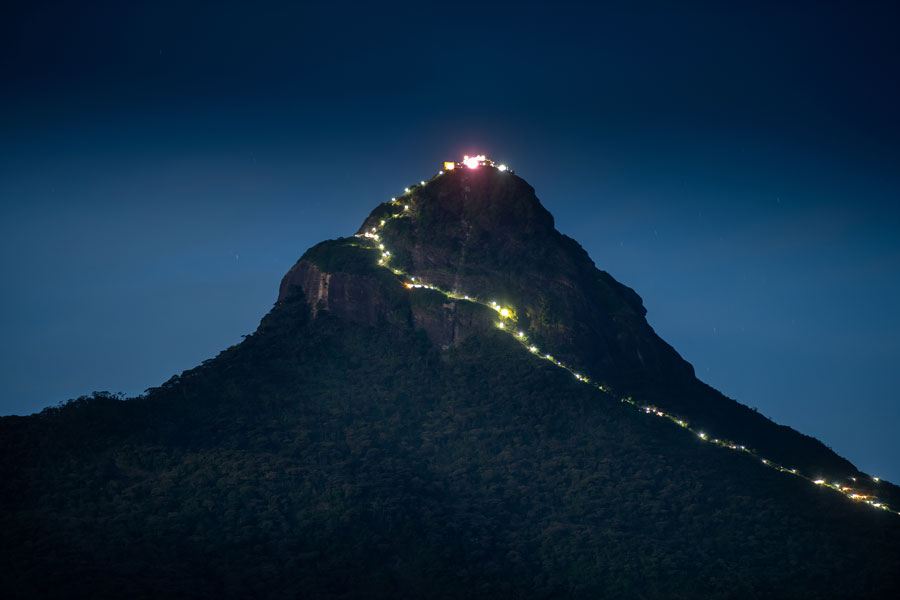
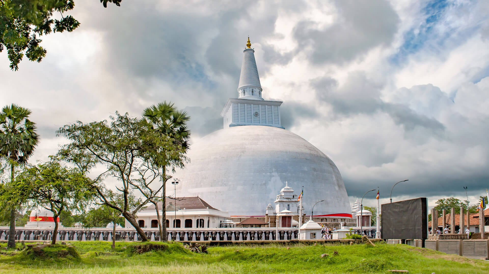
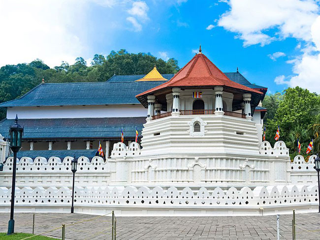
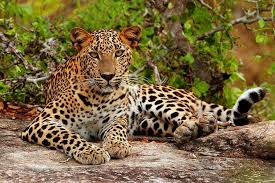

Check Out Some Attractive Destinations in Sri lanka

Sigiriya
Sigiriya, also known as Lion Rock, is an ancient rock fortress in Sri Lanka. It stands approximately 180 meters (590 feet) high and features historical frescoes and a massive granite column. The ruins of the capital built by King Kassapa I lie atop this steep peak, making it a UNESCO World Heritage Site

Adam's Peak
Adam’s Peak, also known as Sri Pada, is a 2,243-meter (7,359-foot) sacred mountain in central Sri Lanka.

Anuradhapura
Anuradhapura, a UNESCO World Heritage Site, is an ancient city in Sri Lanka, known for its well-preserved ruins and Buddhist temples.

Galle Dutch Fort
Galle Fort, built by the Portuguese in 1588 and fortified by the Dutch, stands as a testament to Sri Lanka’s rich heritage.

Temple of Tooth Relic
Dalada Maligawa, commonly known as the Temple of the Sacred Tooth Relic, is a Buddhist temple in Kandy, Sri Lanka.

Yala National Park
Yala National Park, renowned for leopards and elephants, spans 130,000 hectares. It’s a must-visit wildlife paradise in Sri Lanka.